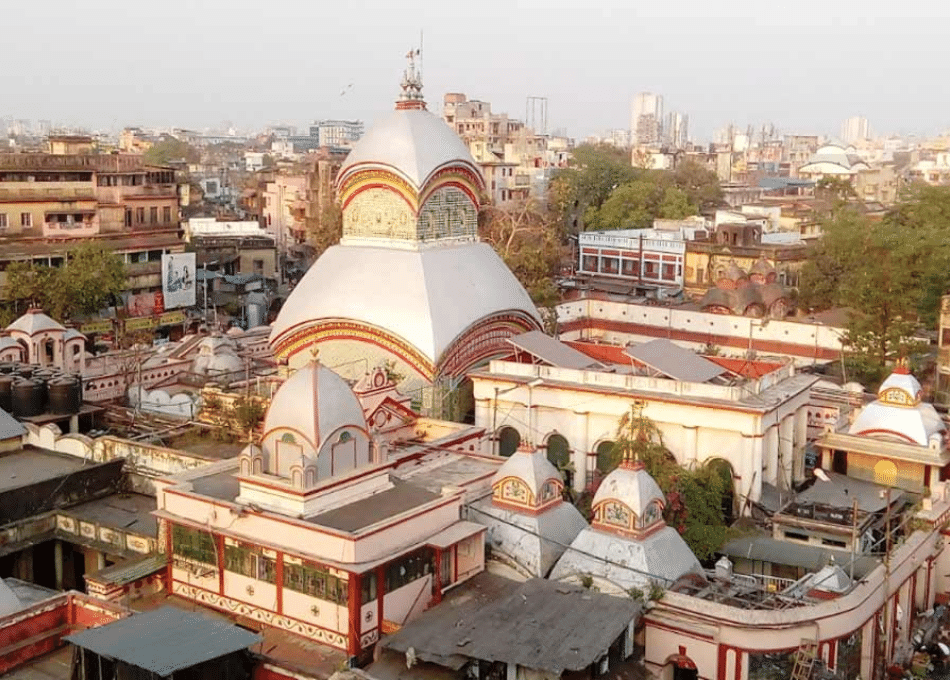
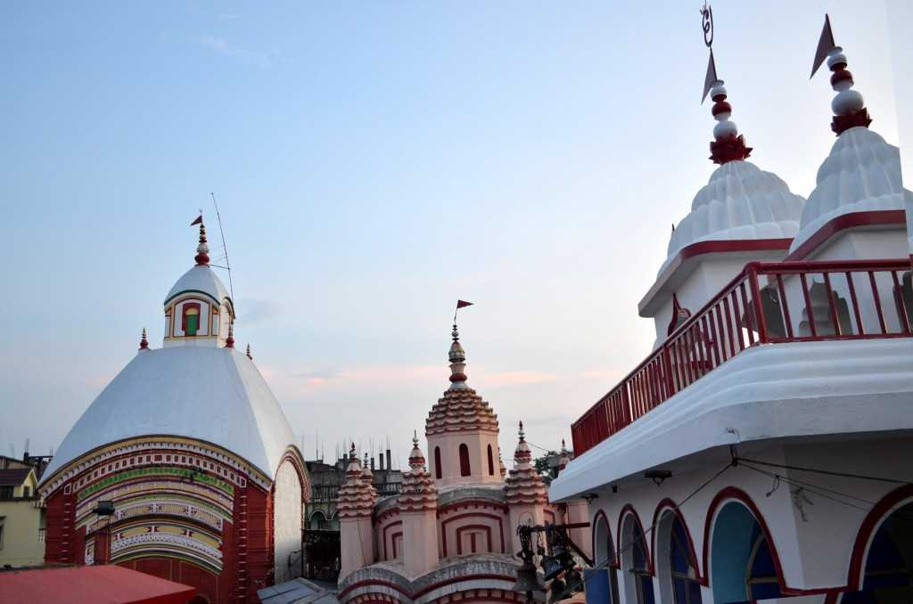
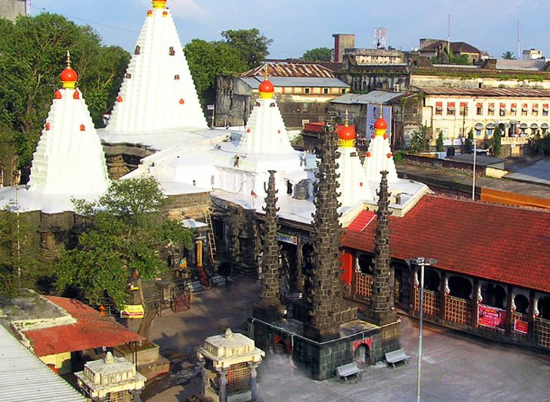
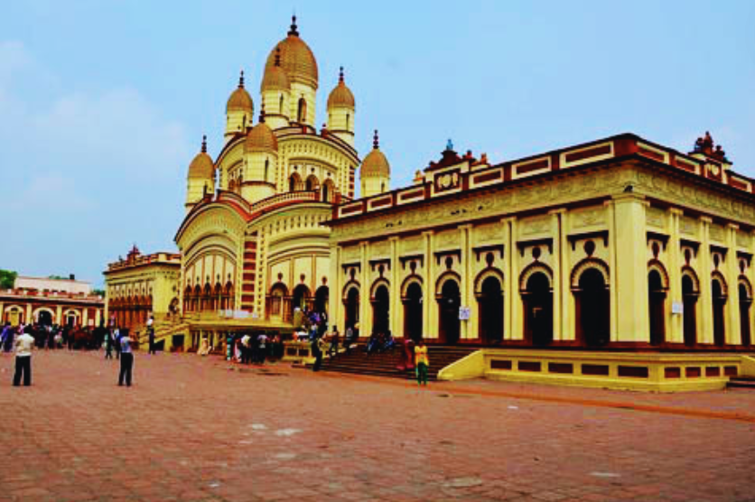
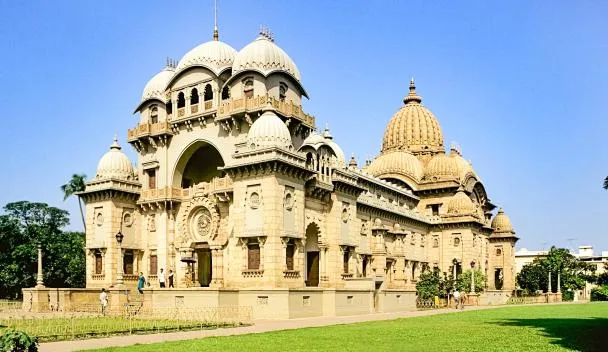
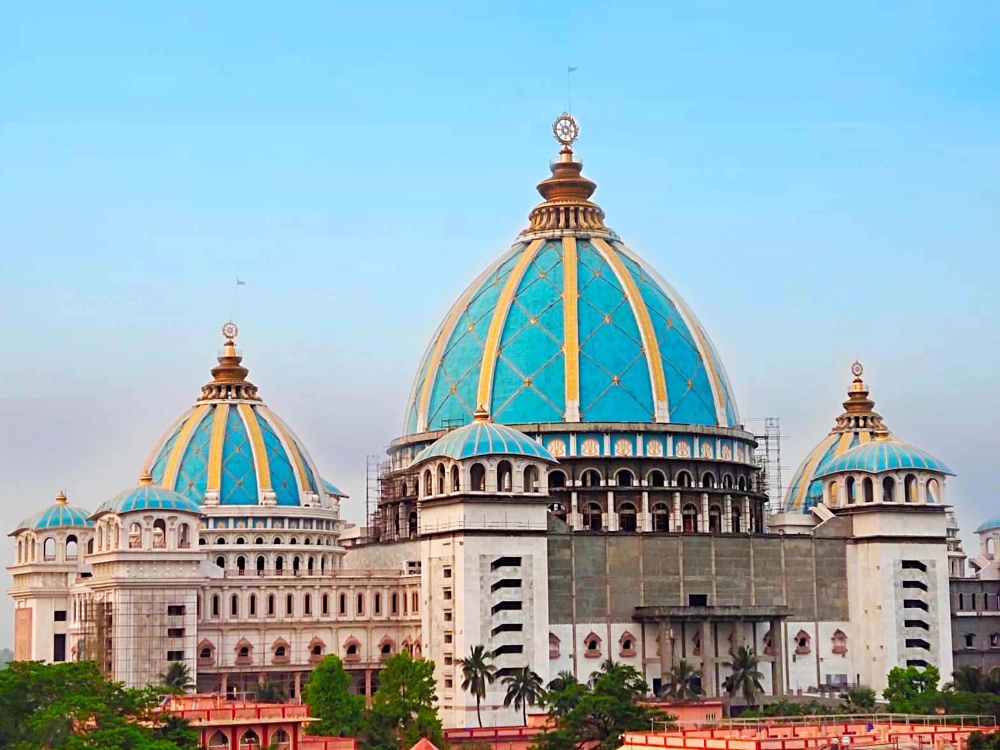
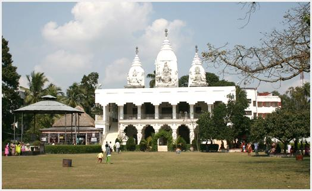

Temples and Pilgrimages in West Bengal
Kalighat Temple Kolkata

The Kalighat Kali Temple in Kolkata is a 19th-century, 51-Shakti Peeth site believed to be where Goddess Sati's right toe fell, making it one of Hinduism's holiest spots. Dedicated to Goddess Kali, the temple is central to the city's identity and is known for its unique idol with a gold tongue.
Key tourist Information:
- Location: Kalighat, Kolkata, West Bengal.
- Best Time to Visit: Early morning or afternoon on weekdays. The temple is extremely crowded during festivals like Kali Puja, Durga Puja, and Poila Boishakh (Bengali New Year).
- Timings: The temple is usually open from 5:00 AM to 2:00 PM and 5:00 PM to 10:30 PM.
- How to Reach: The nearest metro station is Kalighat Metro Station, which is within walking distance.
- Important Sites: Inside the complex are the main temple, Shasthi Tala, and the Kundupukur holy water tank.
- Tips: It can be overwhelming due to crowding and local priests/guides; be cautious of overly persistent guides.
- Click here for more information.
Tarapith Temple Birbhum

Tarapith Temple, located in Birbhum, West Bengal, is a revered 13th-century Hindu Shakti Peetha dedicated to Goddess Tara, a ferocious Mahavidya. Renowned as a major Tantric center and located near a cremation ground, it is famous for the worship of Goddess Tara and the spiritual legacy of the saint Bamakhepa.
Visitor Information:
- Location: Chandipur village, Rampurhat II CD block, Birbhum district, West Bengal.
- Best Time to Visit: October to March (cooler months).
- Significance: It is believed that the eyeball (Tara) of Goddess Sati fell here.
- Tantric Tradition: The temple is deeply associated with tantric worship, including rituals in the nearby cremation grounds.
- Visiting Hours: The temple is generally open for long hours, but mornings and evenings are best for visiting.
- Nearby Attractions: Bakreswar Temple, Nalhateshwari Temple, and Birchandrapur Temple.
How to Reach:
- By Train: The nearest major railway station is Rampurhat (approx. 10 km), well-connected to Kolkata and other parts of India.
- By Road: Located roughly 80 km from Bolpur and easily accessible by road from Kolkata.
- Click here for more information.
Bakreswar Temple

Bakreswar, located in West Bengal's Birbhum district, is a prominent Hindu pilgrimage site known as one of the 51 Shakti Peethas where Goddess Sati's forehead/eyebrows fell. It is famous for the Mahisamardini temple, ancient Shiva temples (including Astabakra), and ten natural hot springs. It is a major tourist destination for spiritual seekers and nature lovers.
Tourist Information for Bakreswar, Birbhum:
Attractions:
- Temples: The main Bakreswar Temple and the Mahishamardini Shakti Pitha.
- Hot Springs: Ten natural hot springs with alleged medicinal properties, including Agni Kunda, Surya Kunda, and Dudh Kunda.
- Nearby Spots: Mama-Bhagne hills (Dubrajpur), Hetampur Rajbari, and Nil Nirjane Dam.
- Best Time to Visit: October to March, when the weather is comfortable.
- Main Festival: Shivaratri, during which a three-day fair is held.
- Click here for more information.
Dakshineshwar Kali Temple

Dakshineswar Kali Temple - History, Location, SightseeingThe Dakshineswar Kali Temple is a renowned 19th-century Hindu temple located on the Hooghly River's eastern bank near Kolkata, dedicated to Goddess Kali (Bhavatarini). Founded in 1855 by Rani Rashmoni, it is famous for its Navaratna (nine-spired) architecture and as the place where the saint Sri Ramakrishna Paramahansa lived and attained spiritual insights.
Key tourist Information
- Location: Dakshineswar, Kolkata, West Bengal 700076, India.
- Best Time to Visit: Early mornings (before 8 AM) or late afternoons (around 4 PM) are ideal to avoid heat and long lines.
- Opening Hours: 6:00 AM to 12:30 PM and 3:00 PM to 9:00 PM, open all days.
- Major Attraction: The main temple, the twelve smaller temples dedicated to Shiva, and the holy bathing ghat on the river.
- Parking: A paid parking lot is available.
- Click here for more information.
Belur Math

Belur Math, located on the Hooghly River's western bank near Kolkata, is the global headquarters of the Ramakrishna Math and Mission. Founded in 1897 by Swami Vivekananda, this 40-acre, tranquil complex is renowned for its unique architecture that blends Hindu, Christian, Islamic, and Buddhist styles, symbolizing religious unity.
Key Visitor Information
- Timings: Open daily from 6:00 AM – 12:00 PM and 4:00 PM – 8:00 PM (8:30 PM in summer).
- Entry Fee: Free entry.
- Best Time to Visit: November to February (cool weather).
- Duration: 2–3 hours.
- Click here for more information.
Key Locations
- Address: Belur, Howrah, West Bengal 711202, India.
- Proximity: Roughly 10 km north of central Kolkata.
The ISKCON Temple in Mayapur, West Bengal

The ISKCON Temple in Mayapur, West Bengal, is the global spiritual headquarters of the International Society for Krishna Consciousness, nestled at the confluence of the Hooghly and Jalangi rivers. As the reputed birthplace of Chaitanya Mahaprabhu, it is a major Gaudiya Vaishnava pilgrimage site featuring the massive, under-construction Temple of the Vedic Planetarium.
Key Tourist Information:
- Best Time to Visit: November to February offers pleasant weather.
- Key Festivals: Gaura Purnima (Feb-March), Navadvipa Mandal Parikrama, and major Vaishnava festivals.
- Highlights: The Temple of the Vedic Planetarium (TOVP), Senior devotee classes, and morning/evening Aarti.
- Accommodation: The ISKCON campus offers several guest houses including Conch Bhavan, Gada Bhavan, and Ishodyan Bhavan.
- Click here for the official --website
How to Reach:
- Train: The nearest major rail station is Nabadwip Dham (30 km away).
- Road: Roughly a 3-4 hour drive from Kolkata (129 km).
- Boat: Crossing the Ganga from Nabadwip town via boat is common.
Chakla Dham Lokenath Mandir

Chakla Dham, located in North 24 Parganas, West Bengal, is the revered birthplace of the 18th-century saint Baba Lokenath. It is a major, well-maintained spiritual center known for its peaceful environment and popularity among devotees seeking blessings. Key attractions include the main temple, lush surroundings, and nearby ashrams.
Key Visitor Information
- Location: Chakla Village, Deganga Tehsil, North 24 Parganas, West Bengal.
- Significance: Considered the birthplace of Baba Lokenath, a renowned 18th-century saint.
- Temple Timings: 8 AM to 12 PM and 3 PM to 8 PM (General hours 8 AM – 10 PM).
- Best Time to Visit: Throughout the year, but very crowded during Fridays and special celebrations.
- Key Rituals: Offering flowers, lighting diyas (lamps), and tying threads to seek blessings.
How to Reach
- By Train: Guma Railway Station (GUMA) on the Sealdah-Bangaon line is the nearest railway station. Rickshaws and taxis are available from the station to the Dham.
- By Air: Netaji Subhas Chandra Bose International Airport (CCU) is the closest, roughly 30–40 km away.
- By Road: Well-connected from Kolkata via the Jessore Road or NH112 (about 2-3 hours depending on traffic).
- Click here for more information.